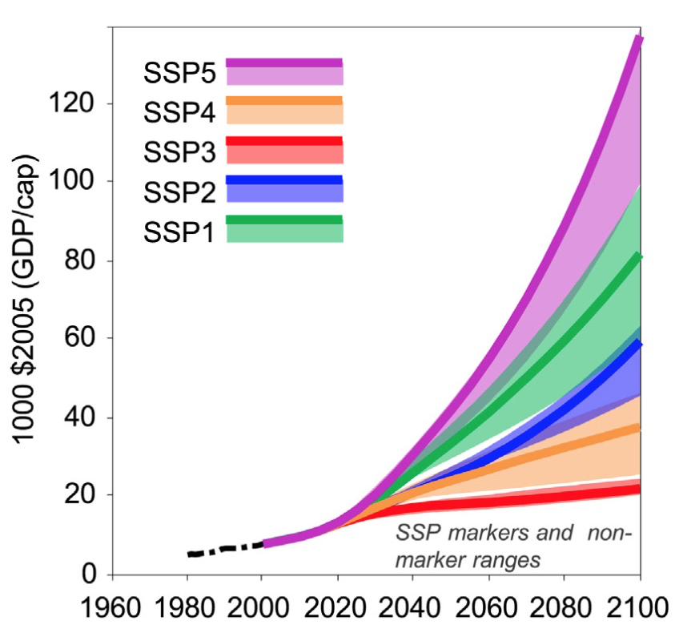
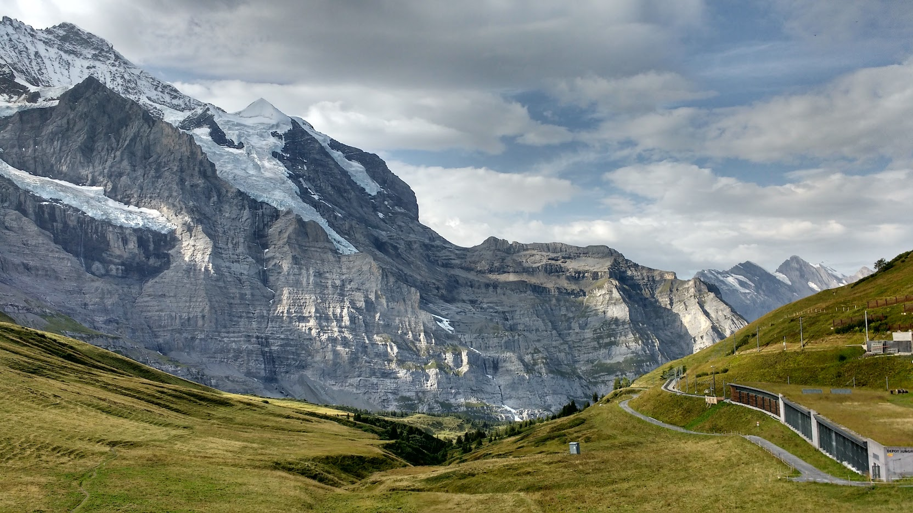
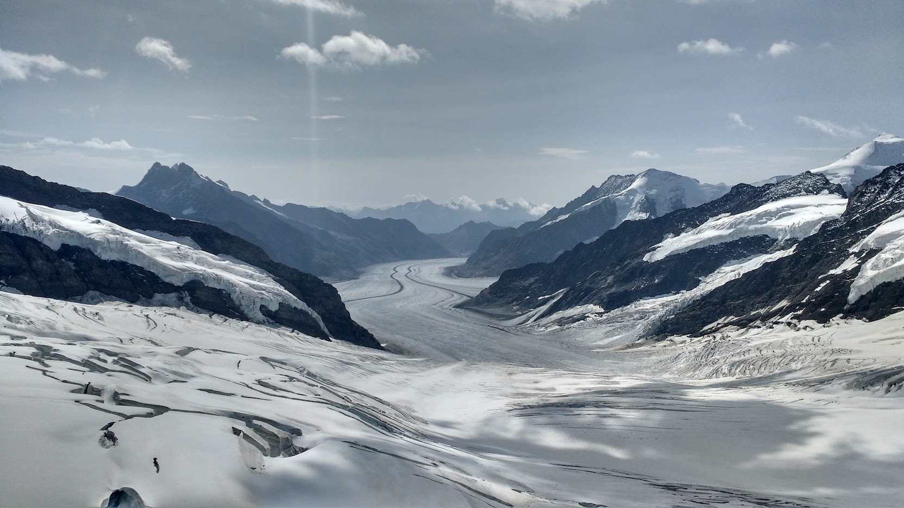

I recently attended the 10th International Carbon Dioxide Conference (ICDC) in Interlaken, Switzerland, where I presented a poster. The conference brings together ocean, atmosphere, terrestrial and political scientists to talk about how anthropogenic CO2 is impacting the natural cycles. One of the great things about this conference is that we learn from these different fields.
The view of Interlaken from Harder Klum viewpoint. In the distance, Jungfrau and the Eigher.
The talks on climate change and policy were interesting as they summarised the motivation for a lot of the work at the conference. In particular a presentation by Glen Peters from CICERO. Here are some quotes from his presentation:
Current emission pledges to the Paris Agreement appear insufficient to hold the global average temperature increase to well below 2°C above pre-industrial levels.
Explosive and policy-driven growth in wind and solar has contributed to the global emissions slowdown, but has been less important than economic factors and energy efficiency.

A graph showing the GDP per capita for each of the naritives for the next IPCC assessment report, where the key corresponds to the definitions in the text.
This highlights the comlexity of the climate change problem, showing that ultimately policy will be needed to push companies and consumers in the right direction ( < 2°C). This is also the reason that the IPCC, the International Panel for Climate Change (UN) has intrudced the new Shared Socioeconomic Scenarios (SSPs), which was presented by Nico Bauer. There are currently five SSP naritives for the next assesment report (Riahi et al., 2017):
- Sustainability: The world shifts gradually, but pervasively, toward a more sustainable path, emphasizing more inclusive development that respects perceived environmental boundaries.
- Middle of the road: The world follows a path in which social, economic, and technological trends do not shift markedly from historical patterns.
- Regional rivalry: A resurgent nationalism, concerns about competitiveness and security, and regional conflicts push countries to increasingly focus on domestic or, at most, regional issues.
- Inequality: Highly unequal investments in human capital, combined with increasing disparities in economic opportunity and political power, lead to increasing inequalities and stratification both across and within countries.
- Fossil-fueled Development: This world places increasing faith in competitive markets, innovation and participatory societies to produce rapid technological progress and development of human capital as the path to sustainable development.
Go to my google album to see more photos of Interlaken https://goo.gl/photos/oJPMiSfwAS3XbdPz6

